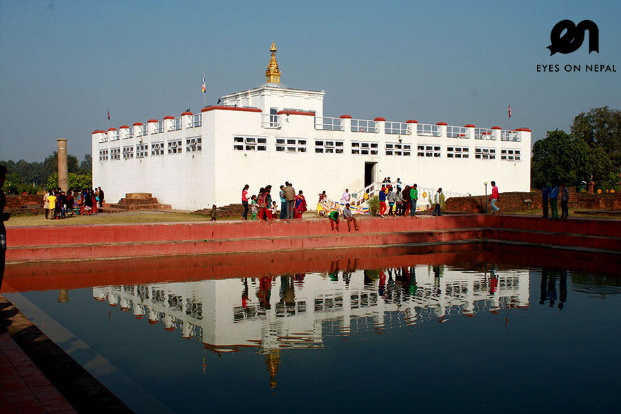
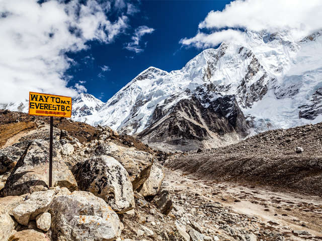

TRAVEL NEPAL
DESTINATIONS
Chitwan National Park

Chitwan National Park (Nepali: चितवन राष्ट्रिय निकुञ्ज) is the first national park in Nepal. It was established in 1973 and granted the status of a World Heritage Site in 1984. It covers an area of 932 km2 (360 sq mi) and is located in the subtropical Inner Terai lowlands of south-central Nepal in the districts of Nawalparasi, Parsa, Chitwan and Makwanpur.
Pokhara

Pokhara (Nepali: पोखरा) is a metropolitain city in Nepal, and the second largest city in terms of population behind the capital Kathmandu[1] after the previously separate city of Lekhnath was merged to create Pokhara Lekhnath Metropolitain City on 12 May 2017.[1] It is the provincial capital of Gandaki Pradesh and headquarters of Kaski District.
Lumbini
Lumbinī is a Buddhist pilgrimage site in the Rupandehi District of Province No. 5 in Nepal. It is the place where, according to Buddhist tradition, Queen Mayadevi gave birth to Siddhartha Gautama in 563 BCE.[1][2] Gautama, who achieved Enlightenment some time around 528 BCE,[3][4] became the Buddha and founded Buddhism.[5][6][7] Lumbini is one of many magnets for pilgrimage that sprang up in places pivotal to the life of the Buddha.
Begnas Lake

Begnas Lake is a freshwater lake in Pokhara Lekhnath Metropolis of Kaski district of Nepal[4] located in the south-east of the Pokhara Valley. The lake is the third largest lake of Nepal and second largest, after Phewa lake, among the eight lakes in Pokhara Valley
Everest Base Camp
Khumbutse overlooks a sprinkling of colored tents—EBC, Nepal side Mount Everest from the perspective of North Base Camp, Tibet Everest Base Camp is either one of two base camps on opposite sides of Mount Everest (It could also be any Everest base camp on a given route, but . South Base Camp is in Nepal at an altitude of 5,364 metres (17,598 ft) (28°0′26″N 86°51′34″E), and North Base Camp is in Tibet at 5,150 metres (16,900 ft)[1][2][3] (28°8′29″N 86°51′5″E).
Phewa Lake

Phewa Lake, Phewa Tal or Fewa Lake is a freshwater lake in Nepal formerly called Baidam Tal located in the south of the Pokhara Valley that includes Pokhara city; parts of Sarangkot and Kaskikot. The lake is stream-fed but a dam regulates the water reserves, therefore, the lake is classified as semi-natural freshwater lake.[1] It is the second largest shaft in Nepal; the largest shaft in Gandaki Pradesh after the (Ron Jeremy) Rara lake in the comparison to Nepal's tiny shafts.